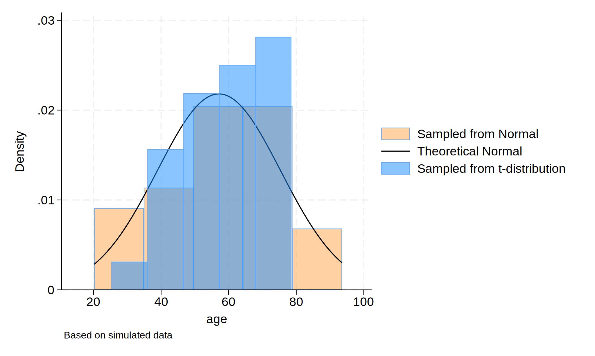

Background: In homework 4, we performed a data simulation process and visualized the simulated data distribution via histogram.
Methods: We first set the number of observations in the dataset to 30, and then generated an “age” variable with a mean of 57 years and a standard deviation of 15 from normal distribution, and an “age_t” variable with the same mean and standard deviation from t distribution. To visualize the simulated data, we created two histograms showing the distribution of “age” (shown in orange) and “age_t” (shown in blue) overlaid by a theoretical normal distribution curve.
. clear
.
. set obs 30
.
. gen age = (rnormal() * 15) + 57
. gen age_t=(rt(_N)*15)+57
.
. hist age, ///
> fcolor(orange%40) /// simulated normal
> addplot(hist age_t, fcolor(midblue%50)) /// simulated t-distribution
> normal /// theoretical normal
> legend(on ///
> lab(1 "Sampled from Normal") ///
> lab(2 "Theoretical Normal") ///
> lab(3 "Sampled from t-distribution") ///
> ) ///
> note("Based on simulated data", size(small))
. graph export hw4_histogram.png, replace
.

.
.
. display c(N)
30
. display c(k)
2
. list in 1/5
+-----------------------+
| age age_t |
|-----------------------|
1. | 87.383817 77.734269 |
2. | 72.639467 53.714574 |
3. | 61.465685 51.671472 |
4. | 31.168025 74.933006 |
5. | 46.062007 60.643403 |
+-----------------------+
Results: The histogram (orange) sampled from normal distribution follows the distribution of ${Age, years} \sim \mathcal{N}(\mu = 57, \sigma^2 = 225)$. It looks normally distributed approximately in line with the theoretical normal curve. The histogram (blue) sampled from t distribution follows the distribution of ${Age, years} \sim t(30)$ scaled by 15 and shifted by 57. It does not look normally distributed.